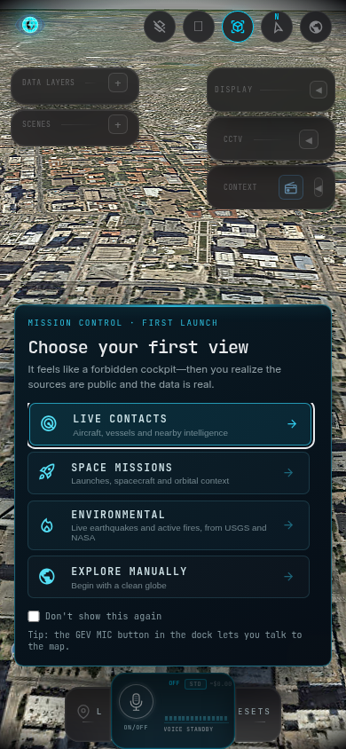

// Case study 02 · Live · OSINT
GOD'S EYE VIEW
A 3D globe built on real public feeds: flights, satellites, earthquakes, launches and traffic cameras.

Live God's Eye View

Phone view: panels folded into small top buttons
01
The problem
God's Eye View is a strong open source globe of live public data. I wanted it running live on a free plan and comfortable on a phone, where the panels needed rework. I forked it, hosted it and fixed the mobile layout.
02
What I built
- Hosted on a free Render service
- Mobile layout reworked so the globe is usable on a phone
- Only free data layers are used
- Credit: original project by Bilawal Sidhu
03
The result
- Live on a free Render plan at no cost
- Mobile layout reworked: panels fold into small top buttons so nothing overlaps
- Synced with upstream, which was about 500 commits ahead
- Credit stays with the original author, Bilawal Sidhu
What it is
A photorealistic 3D globe showing live open data: ADS-B flights, satellites, earthquakes, launches and public traffic cameras. This is a fork of Bilawal Sidhu's open source project. Sourav synced it with upstream, hosted it on a free plan and reworked the mobile layout so panels fold into small top buttons and nothing overlaps.
Fork of an open source project, not an original build.
Highlights
Hosted on a free Render service
Mobile layout reworked so the globe is usable on a phone
Only free data layers are used
Credit: original project by Bilawal Sidhu
5live data layers
$0hosting
// Challenges solved
The mobile layout needed rework: panels now fold into small top buttons so nothing overlaps on a phone
The upstream project was about 500 commits ahead; it was synced before hosting
JavaScript3D globeOpen data feedsRender